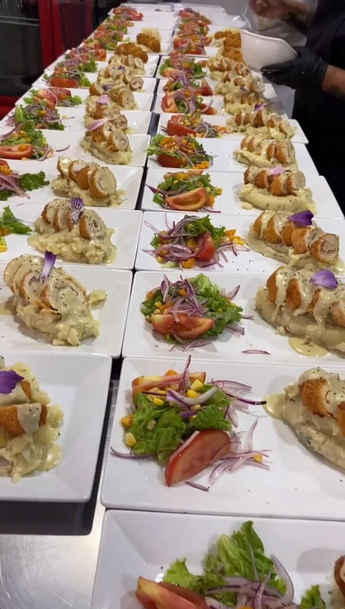
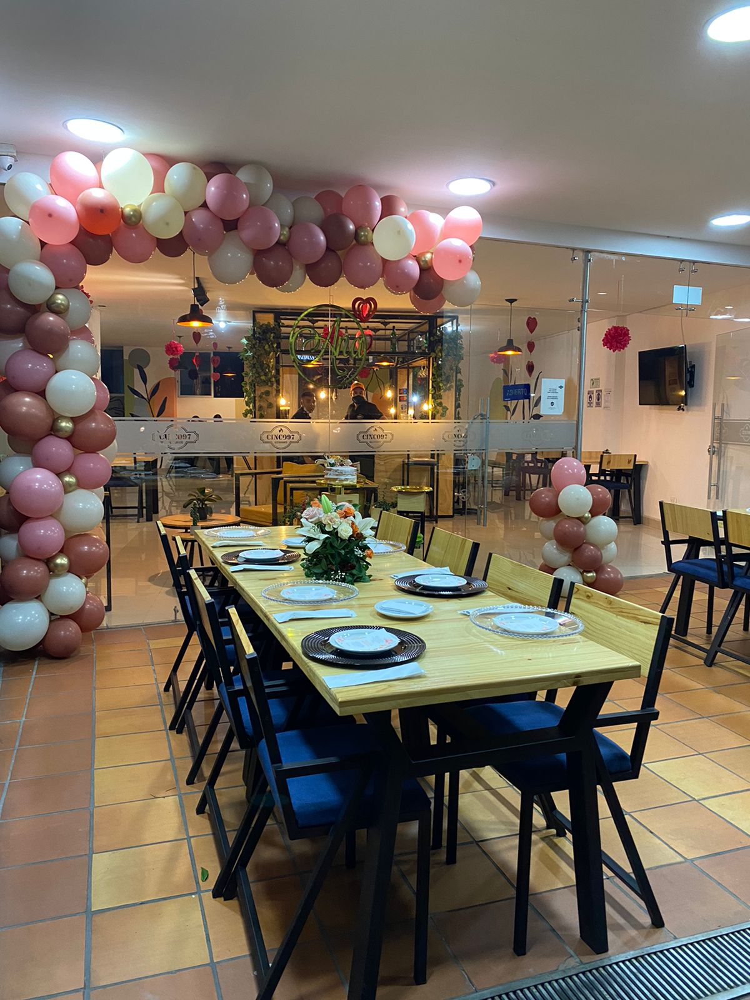
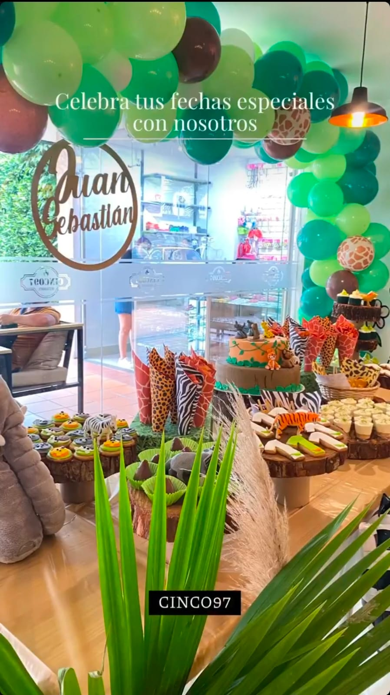

Eventos empresariales
Diseñamos y producimos experiencias corporativas de alto impacto: lanzamientos de producto, conciertos privados con artistas nacionales e internacionales, activaciones de marca, convenciones y celebraciones institucionales. Combinamos rigor en la logística con dirección artística real con capacidad de ejecución.
Eventos familiares y sociales
Producimos cumpleaños, aniversarios y celebraciones privadas, con el mismo estándar que un evento corporativo de gran formato: curaduría musical, producción técnica y atención al detalle que convierte una celebración en una experiencia memorable. Cada evento se piensa como una puesta en escena, no como un trámite logístico.



